Errors with Browser
Help with Errors¶
Get Help, Not Frustrated
For first-time builders, there are a lot of one-time steps that all have to be correct and many screens look similar.
If you are updating your build, the process can be confusing and some error messages can be misleading.
You are not alone - please reach out.
If you are having trouble:
Please DO:¶
- Use the LoopDocs search feature
- Use the zulipchat or Facebook search feature
- Ask a mentor for help
Please do NOT:¶
- Search in a general internet browser to find your error
- Ask ChatGPT (or other AI) how to fix your error
- Spend hours in frustration
- Rename or delete a repository
- Delete your GitHub account
- Remove your App from App Store Connect
Where to Get Help with Browser Build¶
These are two places to ask for help, but please choose only one. You may get a faster response from Facebook, but there are mentors on both sites:
What Information is Needed for Help¶
-
Your GitHub name used for building (required):
- Best to provide a link to your repository, like the example, but substitute your information
- If you are building an app other than Loop, replace LoopWorkspace with the app repository name
If you use an organizationhttps://github.com/my-name-org/LoopWorkspaceIf you do not use an organizationhttps://github.com/my-name/LoopWorkspace -
A brief summary of the step you are on and what isn't working.
That's all we need to get started.
Mentors can go to your public GitHub repository, make sure your code is up to date, examine your customizations (if any), then click on the Action tab and view your log files directly.
- Do not copy from the log file and post the words
- Do not take a screenshot of what you think is an error
GitHub URL, Not Pictures
If you've been around the DIY community for a while, you know the mantra about screenshots. Well, when using a browser to build, screenshots are close to useless.
All that is needed to assist is your link to the GitHub repository where you are building.
Quick Reference for Browser Build Errors¶
Please make this your first stop if you get any kind of an error with Browser Build.
Link Styles¶
If you notice an arrow pointing up and to the right beside the link:
- This means a new tab or window (depending on your browser configuration) is opened when you click on the link
- Your original place in the docs is in the original tab, so you can return to your same position in the docs
If there is no upright arrow by a link, then the location is on the same page:
- Once you have read that section, hit the back arrow in your browser to return to your original location
Look at the Annotation¶
If you get an error in an Action. Click on the link and scroll down to view the annotation. An example is shown below. Some errors have a clear annotation telling you what to do. If the annotation is not clear to your, please ask a mentor for help.
Changes at Apple led to a number of new errors - these do have have nice annotations.
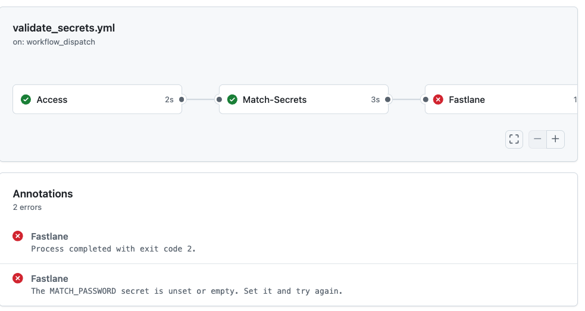
Rebuild or New Builder¶
- If you have successfully built before and this is a rebuild, skip ahead to Rebuild Errors Quick Reference
- If you are a new builder, please continue reading
New Builder: Quick Reference¶
New Builder: Validate Secrets Error¶
This is the first step. If you have not succeeded (✅) with this action - STOP.
- No other action will work - because all the other actions repeat Validate
Secretsas the first step of the action - Be sure to Look at the Annotation (click on the link to the right of the )
- You can ask a mentor for help
If you want to try to solve it yourself, refer back to these section in the documentation:
New Builder: Add Identifiers Error¶
If you succeeded with Validate Secrets, this should also succeed. If it does not, please skip ahead to Action: Add Identifiers Error`.
Do not hesitate to ask a mentor for help.
New Builder: Create Certificates Error¶
New builders should skip the separate Create Certificates step. It is run when you Build Loop.
Successful Certificate, Failed Build
The create certificate step simply creates certificates based on how you configured your Identifiers. You can have a successful certificate step but still fail with the build if you made a mistake when you configured the Identifiers.
New Builder with a Successful Create Certificates but a Failed Build¶
This is one of the hardest ones to solve. If you are getting this, don't be afraid to ask a mentor for help. If you want to solve it yourself, a link is coming your way but first read this:
This is NOT Your Error¶
When you start this action, GitHub starts a cloud computer to run your job for you. It doesn't have any information about you or your Secrets - yet.
Early in the log file you will see two phrases in red font:
There are no local code signing identities found.
security: SecItemCopyMatching: The specified item could not be found in the keychain.
This is normal. The next steps will set up a keychain for you using your Match-Secrets repository and your MATCH_PASSWORD passphrase.
Where to find the Certificate Solutions¶
Head over to Action: Create Certificate Errors and find your specific error.
New Builder: Build Errors¶
The most likely reason to get errors here is a mistake in the Prepare App page.
Common errors are:
- You skipped one of the Identifiers when adding the App Group to it
- The App Group was spelled wrong
- You unchecked a capability on one of the Identifiers (because you watched an old video)
- You did not select the correct identifier when creating your app
- You entered an incorrect TEAMID
All of these solutions are found in Action: Build Loop Errors. The mentors can pick out the exact solution quickly if you ask a mentor for help.
An example annotation for skipping adding the App Group one of the Identifiers is shown in the graphic below. The App Group for Loop-Intent-Extension was deliberately removed to provoke that error.
Unfortunatley, the automatic annotation seen here is no longer provided by the tool we use. We may get it added back later. In the meantime, you will need to search for the phrase
::errorin the log file. We'll explain that in the detailed howto section.
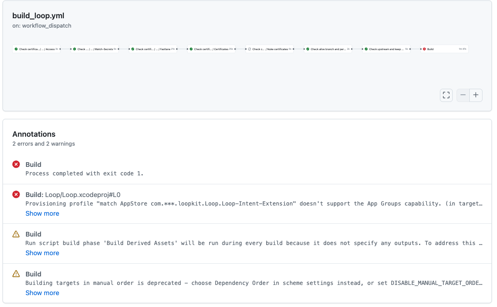
Rebuild Errors: Quick Reference¶
Manual Enable for Build Action May be Required¶
The automatic build actions should occur every Sunday. They do for all OS-AID apps except for Loop. (We do not know why.)
If your build action is being disabled, you need to manually enable the action at your repository as shown in the graphic below and then launch a manual build.
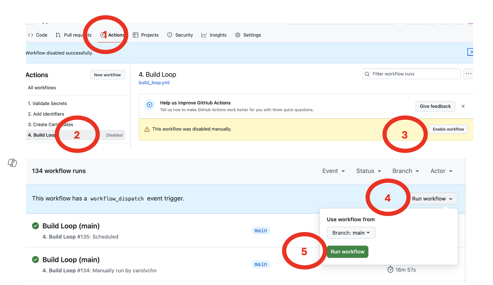
Rebuild: Create Certificates Error¶
These should be a thing of the past - but you must do this step Add Variable.
Caveat - your Apple Developer account must be in good standing with a valid credit card attached and all agreements signed.
Rebuild: Build Error¶
The Create Certificates Action is incorporated into the Build Action. So for rebuilders, if you completed the manual sync and added the new variable, you should not get an error when building.
Caveat - your Apple Developer account must be in good standing with a valid credit card attached and all agreements signed.
There are, however, a few intermittent errors that can happen when GitHub and Apple don't communicate for some reason or there is a problem with the TestFlight upload. Check out Action: Build Loop Errors when Updating.
Most Common Mistakes¶
If you get an error when building with a browser, you can use this page to figure out what to do - but don't be afraid to ask for help.
Build Credentials are Invalid
If you are a repeat builder and you get this build error message: No code signing identity found and. The phrase ends with can not create a new one because you enabled readonly but the readonly has backquotes around it. Sometimes, the phrase uses cannot and in other cases can not.
You need to delete your Distribution Certificate(s) and try again. See Revoke Distribution Certificate.
These are some of the most common errors to date.
- You made a spelling error when adding
Secrets- Each secret must be spelled exactly the way it is presented in the instructions
- If you are using an automatic translation, please keep an original page open too and copy from it to make sure there are no spelling errors in the secret name
- You made a spelling error in creating the
App Group Identifieror did not add theApp Group Identifierto all 4 of the required identifiers in this step: AddApp GrouptoIdentifiers- See Annotation without Clear Message (Build) for an example of this kind of failure
- You used a smart editor instead of a text-only editor to save your information
- It only takes one letter to be changed from small to capital by your smart editor to ruin your day
- The alpha-numeric values used for
GH_PAT,FASTLANE_ISSUER_IDandFASTLANE_KEYcontain both small and capital characters and all the values are case-sensitive
- When saving
TEAMID, you typed what you thought you saw instead of using copy and paste - You skipped running one of the actions
- You need to sign a program license agreement or update a credit card at Apple Developer
- Be sure to read Misleading Error Message
Examine Annotation¶
If a GitHub Action fails, you will see a clear notification.
First consider the following results from the GitHub Action: 1. Validate Secrets.
Annotation with Clear Message¶
Your screen may look similar to the graphic below. The name in parentheses refers to the branch used to develop these wonderful messages. Yours will almost always be the main branch.
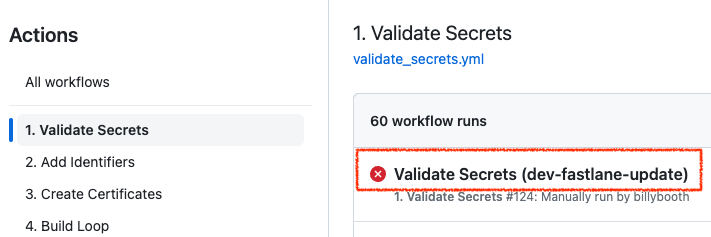
But there are so many reasons why this could happen. The first step is to click on the link highlighted by the red rectangle in the graphic above. This opens a new detailed view. The GIF below shows two different error messages. The first frame shows the error in the Annotation box at the bottom (you may need to scroll down to see this), and you may need to click on "Show More" to see the full message as seen in the second frame. The third frame of the GIF shows a different message. Each one these messages is designed to make it easier for you to diagnose your own problem.
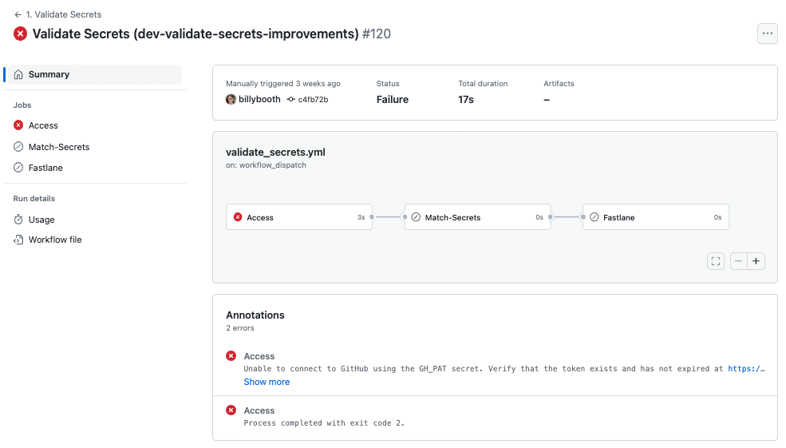
Notice that GitHub Action: 1. Validate Secrets is broken into three jobs each of which will either pass and show a green check or fail and show a red check. The secrets are validated with each action.
Annotation without Clear Message (Certificates)¶
This section is left here for those who have an older version (3.4 or older) in their fork.
If you have updated to 3.6.0 or newer, refer to Rebuild Errors: Quick Reference and ignore this section.
Not all error messages had a clear annotation (up through version 3.4.x).
For example, the graphic below shows a failure of GitHub Action: 3. Create Certificates .

This is an example of a message that is not terribly descriptive - which is why it is shown here. In this case, you can click on just the one job that failed. There will be less to sort through to find your error. The most likely reason for this error is Error: Could not Create.
Missing Certificates¶
Certificates are automatically renewed if your developer account is up to date, all agreements are signed and you completed the new Add Variable step.
If your certificates expired and you do not have the ENABLE_NUKE_VARIABLE configured, you might see this error when you try to build. It does not have a clear annotation. The error string starts with: No code signing identity found and. The phrase ends with can not create a new one because you enabled readonly but the readonly has backquotes around it. Sometimes, the phrase uses cannot and in other cases can not.
Please follow the directions in Revoke Distribution Certificate and build again.
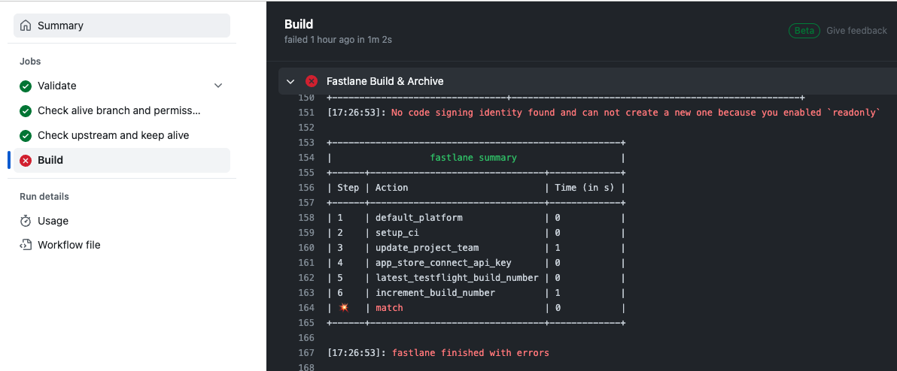
Annotation without Clear Message (Build)¶
The GIF below shows a failure of GitHub Action: 4. Build Loop . The nice messages have not been added to this yet - you will have to follow the Find the Error instructions, but now, you are automatically taken to the correct section so there is less of the log to deal with.
- Frame 1 shows the failure message - click on one of the build links highlighted with the red rectangle (it does not matter which link you click)
- Frame 2 shows the screen displayed after you click the link - you will see the display automatically move to the first item that failed
- The area indicated by the orange rectangle near the top right is where you will paste the strings offered in Action:
Build LoopErrors
- The area indicated by the orange rectangle near the top right is where you will paste the strings offered in Action:
- Frame 3 shows what happens when you paste in the correct string
- Note that if the string is not found, nothing happens
- If the string is found, the display automatically moves to the section of the log with that string
- The particular
Identifier, which does not have the requiredApp Groupfor this example, is the SmallStatusWidget- Note that with version 3.4, SmallStatusWidget is no longer used - perhaps an unfortunate choice for this GIF
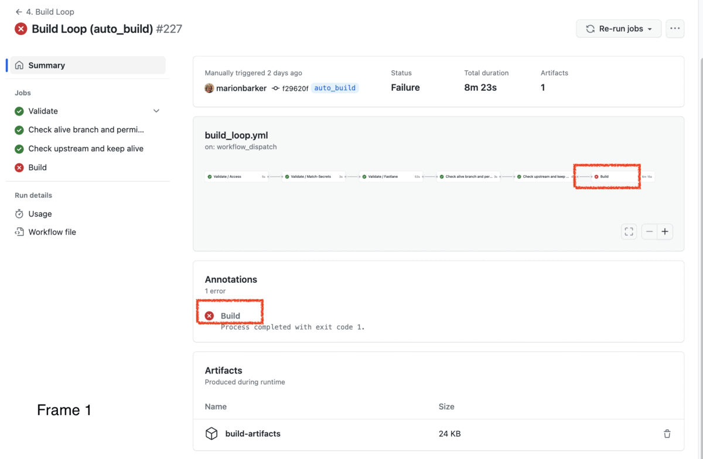
Find the Error¶
This section is required when you need to search for a string to diagnose and error that does not have a clear annotation.
Misleading Error Message¶
If there are Apple Developer agreements you have not accepted, you may get errors when you try to Build that indicate your Apple Secrets are incorrect even if they are not.
- The misleading message tells you that one or more of these:
FASTLANE_ISSUER_ID,FASTLANE_KEY_IDorFASTLANE_KEYis not correct- With
Loop 3.6.0or newer, this should no longer appear unless you have a mistake in one of those
- With
- Check your Apple Developer account for agreements first, before trying to fix those
Secrets - If you previously built successfully - it is almost certainly the agreement
- It can take 15 minutes to an hour after the agreement is signed before it can be used
If you need detailed instructions, click on this Apple Program License Agreement Help Page.
You can also get this message if the credit card used to purchase the Developer account is not current, e.g., no longer valid or credit card expiration date, as entered at Apple, has passed.
Find Your Error¶
At this point, it may be faster to ask a mentor for help. But if you want to dig into the details of the log and find the error yourself, the information is here.
General Search for the Error
- Click on the link to the right of the
- In upper right, there is a search box
- Enter
::errorin the search box to find your specific error- If the search is empty, search for
errorand look at the first one
- If the search is empty, search for
There is a separate section for each step in the process. First, you must follow the Examine Annotation instructions to view the record of the failed action. Then go to the section for the Action you were trying to complete to look for possible error strings to copy into the search box. For each section there are possible strings to paste to search the log.
- Paste in a possible error string (copy it exactly); repeat until you find a match
- If the possible error string is found - follow the directions for that error
Error annotations are available for the Loop app version 3.4 and later for some of the actions. We believe the first two actions have a complete set of error annotations.
- Action:
Validate Secrets - Action:
Add IdentifiersErrors - Action:
Create CertificatesErrors - Action:
Build LoopErrors before a successful build - Action:
Build LoopErrors when Updating after a successful build
If you discover a new error, please reach out to help us update the documentation.
Do Not Remove an App¶
Please do not remove an existing app if you have trouble building a different app. Your build error is not caused by any existing app.
Remove App Warning
If you remove an app and later want to restore that app, you might not be able to.
Sad and Expensive Scenario:
- User removed app with name "My App" and unique bundle ID that includes their TEAMID
- User later decided to restore their app, but in the meantime, someone else has used the name "My App"
- When trying to restore your app, Apple doesn't allow you to change just the name of the app and will not allow you to restore it because someone else has that name, even though your bundle ID is different
- After spending time on the phone with Apple, user's only option was to purchase a new Apple Developer account so they can get a new TEAMID (see steps below) or doing a custom change to the Loop code to modify the bundle ID (no instructions are provided for this - easy to do it wrong)
Instructions to Diagnose Your Errors¶
Action: Validate Secrets Errors¶
For Version 3.4 and later - use Examine Annotation and read the annotation.
Action: Add Identifiers Errors¶
We used to be able to say that if Validate Secrets worked then so did Add Identifiers. That is still typically true for new builders. But we are finding many experienced builders have to revoke their old FastLane API Key and generate a new one to be able to continue building. We don't know why, but it is happening a lot. If you are one of those experienced builders, head over to the Handle the FastLane API Key Error.
If you are new builder who gets an error at Add Identifiers, please ask a mentor for help.
Action: Create Certificates Errors¶
The modern version of Browser Build creates your certificates automatically when you run the build action.
The first time you run the build action, there might be a certificate error if you did not configure your secrets or Identifiers correctly.
Subsequent times:
- You must have your Apple Developer license up to date with all agreements signed
- After a year, you must have the
ENABLE_NUKE_CERTSvariable set to true for automatic renewal - make sure to set that up now
and
Reminder - If it is not obvious to you what your error is, please ask a mentor for help
- you might get to the answer sooner
- you are less likely to do something that makes it harder for the mentor to help you later
Review Find the Error for instructions on how to use the error strings.
- If you want to do a general search for an error, enter
::errorin the search box or justerrorand look at the first item
List of certificate errors on this page:
- Error: No profile for team
- Error: Error cloning certificates
- Error: Could not decrypt
- Error: Could not create
Error: No profile for team¶
This happens if you entered the wrong TEAMID in Secrets.
Copy the words on the line below and paste them into the search function for your action log.
error: No profile for team '***' matching 'match AppStore
If that phrase is found, then:
- You probably do not have the correct
TEAMIDentered in yourSecrets - The rest of these instructions assume:
- You have already created a Loop App in the App Store with that incorrect
TEAMID - This is true if you completed the steps after running Action:
Add Identifiersand before Action:Create CertificatesorBuild Loop
- You have already created a Loop App in the App Store with that incorrect
Click on this link to Delete Identifiers.
- Delete all the other identifiers first, then try to delete the Loop identifier with the wrong
TEAMID - It is fine to just ignore identifiers with the wrong
TEAMID, but do not use them
Rerun Steps with correct TEAMID¶
-
Enter your
TEAMIDcorrectly in the repositorySecrets- Make sure you use copy and paste from your Apple Developer Membership page for that
TEAMID. - Follow the update instructions here (this example is for
GH_PAT, you'll do the same but forTEAMID) Update Secrets
- Make sure you use copy and paste from your Apple Developer Membership page for that
-
Run Action: Configure to Use Browser:
Add Identifiersagain -
Follow all the steps in this section with the correct
TEAMIDConfigure to Use Browser: Configure Identifiers for Loop but when you get to the Configure to Use Browser: Create Loop App in App Store Connect, you need to return to this page and follow the instructions below to remove the app and add a new one.
The first time through, you created an app with a Bundle ID that does NOT include your TEAMID.
You will remove that app and create a new one.
Remove App with Incorrect TEAMID¶
Go to App Store Connect / Apps and follow the numbered steps in the graphic below.
- Find the Loop app you created earlier and click on it
- On the left side, under
General, click onApp Information- Confirm that the value listed under
Bundle IDis the incorrect one - The
Bundle IDsays:com.NOT_YOUR_TEAMID.loopkit.Loop
- Confirm that the value listed under
- Scroll to the bottom of the page and tap on
Remove App - The dialog box, similar to the one in the graphic below, should appear and you tap
Remove- After the App is removed, you'll see a very similar screen, where you can tap on
Restore App
- After the App is removed, you'll see a very similar screen, where you can tap on
- But since you want that App removed, tap on
Appsat the very top of the screen and proceed to the next step
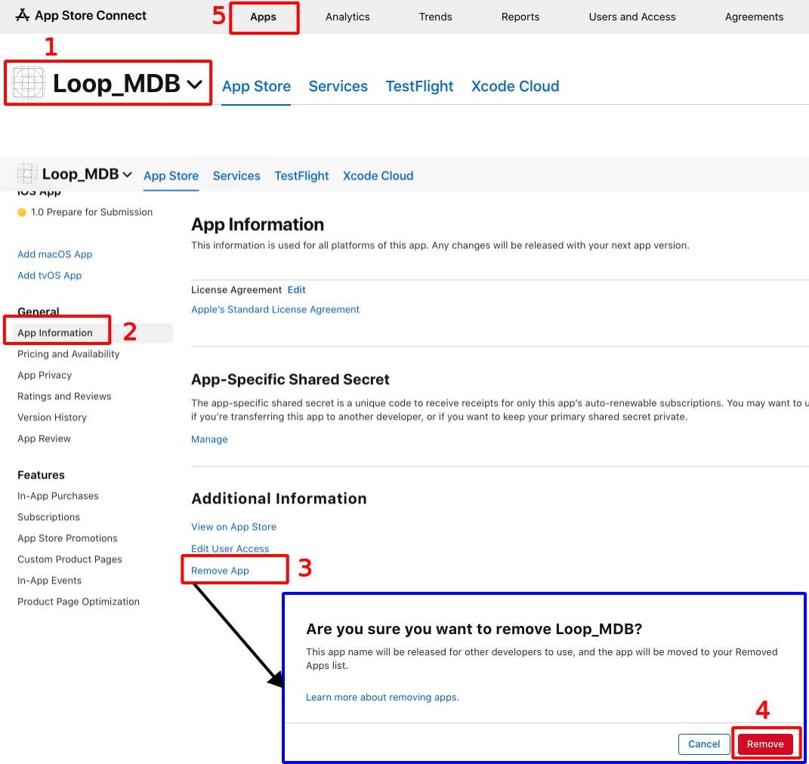
That App with the wrong Bundle ID remains in the App store but it is hidden so it won't confuse you.
Add App with Correct TEAMID¶
Now click on the Add Apps button or the  (plus sign) if you have other apps in the App Store.
(plus sign) if you have other apps in the App Store.
Follow the Configure to Use Browser: Create Loop App in App Store Connect directions with these additions:
- You must come up with a new name for your Loop App
- Triple-check that the
Bundle IDyou choose is for Loop and contains yourTEAMID, it should look like:com.TEAMID.loopkit.Loop - You must come up with a new
SKUfor your Loop App (try1234, if you used123before)
Create Certificates¶
You can go straight to Build Loop which will Create Certificates for you. However, you may be more comfortable making sure you got your mistakes fixed. You can run Create Certifcates as a stand-alone process. It should only take a few minutes.
- After your stand alone run of Create Certificates succeeds, proceed to
Build Loopand keep going.
Error: Error cloning certificates¶
This indicates you do not have the appropriate Repository access.
Copy the words on the line below and paste them into the search function for your action log.
Error cloning certificates
The full error looks like this:
Error cloning certificates repo, please make sure you have read access to the repository you want to use
or
Error cloning certificates git repo, please make sure you have access to the repository - see instructions above
If you see this phrase, the fastlane package that is utilized during the 3. Create Certificates action cannot access your repository to create certificates for your Loop app. This is due to insufficient repository access rights that were not granted during the creation of your GH_PAT token.
To fix this error:
- Open this link: https://github.com/settings/tokens/
- Here you will see your personal access token (
Fastlane Access Token) that was created during Configure to Use Browser: Setup GitHub: CreateGitHub Personal Access Token - Note that
Tokens (classic)is highlighted in the menu on the left - Click on the token name (should be bold, blue
Fastlane Access Token) to open its detail page - None of the checkboxes under
Select Scopeswill be checked – this is what's causing the issue. - Add a check beside the
workflowpermission scope (the graphic does not match the words, you want to useworkflowto get bothrepoandworkflowscope) - Scroll all the way to the bottom and click
Update token(it's a long way, ignore all other settings, do not check anything else)
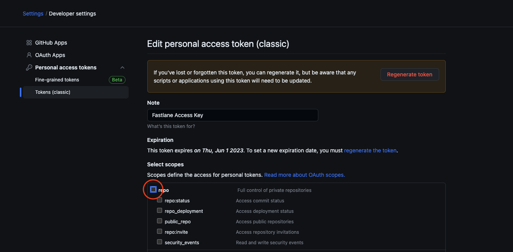
After you have clicked Update token you should see the token overview again with the message Some of the scopes you’ve selected are included in other scopes. Only the minimum set of necessary scopes has been saved. (You can dismiss the message using the X near the upper right side if it appears).
Create Certificates¶
You should be able to continue with the Configure to Use Browser Steps to Create Certificates and then proceed from there with Build Loop and keep going.
Error: Could not decrypt¶
Copy the words on the line below and paste them into the search function for your log file.
decrypt the repo
The full error message is:
Couldn't decrypt the repo, please make sure you enter the right password
If you know you entered the incorrect MATCH_PASSWORD in your repository Secrets, go and fix it now and try again.
Otherwise, you need to follow the steps to Delete Match-Secrets.
Error: Could not create¶
Copy the words on the line below and paste them into the search function for your log file.
Could not create another Distribution certificate
The full error message is:
Could not create another Distribution certificate, reached the maximum number of available Distribution certificates
These steps are required to make room for a Certificate if you have two Certificates or if you tried to create a new certificate in the May/Jun 2025 time frame when the Browser Build actions were "broken", before Loop 3.6.1 was released.
- Follow the directions to Revoke Distribution Certificate
Action: Build Loop Errors¶
First Time Builders
📍 You are here: You had a build error and have never built this app before
✅ Goal: Find and fix your mistake
📋 Repeat Builders: Action: Build Loop Errors when Updating
This section is for people who have not successfully built the Loop app one time. If you are a repeat builder, please skip ahead to Action: Build Loop Errors when Updating.
Refer to Annotation without Clear Message (Build) for a detailed example of these steps:
- Click on the Action log on GitHub
- There will be a series of green items followed by a red one
- Click on the red item to view the error
- Use the search function in this log to locate your error using one of the strings below
For each section below, copy the phrase into the search function of the log. If you find it, solve that error. If not, move on to the next one.
List of build errors in this section:
Error: Provisioning ProfileError: Could not find an app on App Store ConnectError: A new one cannot be created because you enabled
Error: Provisioning Profile¶
Copy the words on the line below and paste them into the search function for your action log.
error: Provisioning profile "match AppStore
If that phrase is found one, or more times, it means you missed a step when configuring the Loop identifier or missed associating your Loop App Group with one or more identifiers.
App Group Mistake
The most common reasons for a new builder to see this
- They spelled the
App Groupcorrectly but missed one or more Identifiers that needed theApp Groupconfigure - seeAdd App Group to Identifier - They did not spell the
App Groupproperly- In the directions, please copy and paste the protype and then insert your TEAMID
- Do not type what you think you see
- It is too easy to mess this one up and it will affect every Identifier. Read this whole section and follow the appropriate links
For example, you might see:
error: Provisioning profile "match AppStore com.***.loopkit.Looperror: Provisioning profile "match AppStore com.***.loopkit.Loop.LoopWidgetExtensionerror: Provisioning profile "match AppStore com.***.loopkit.Loop.statuswidgeterror: Provisioning profile "match AppStore com.***.loopkit.Loop.Loop-Intent-Extension
If some, but not all, of those errors are seen when building the Loop app, then you spelled the App Group correctly, but failed to associate all the Identifiers with that App Group.
- Link to the entire section: First-Time: Identifiers for the
Loopapp- Link to Create
App Group - Link to
`Add App Group to Identifier
- Link to Create
You can build Loop:
- Action:
Build Loop
Error: Could not find an app on App Store Connect¶
Copy the words on the line below and paste them into the search function for your action log.
Could not find an app on App Store Connect
If that phrase is found, then:
-
Make sure you completed the Create Loop App in App Store Connect Step
- Once you've resolved that step, run
Build Loopaction again
- Once you've resolved that step, run
-
This can also be caused if you correctly created the Loop App but entered an incorrect value for the
TEAMID.- If you have the incorrect
TEAMID, check this link: Certificates, Identifiers & Profiles for entries with the incorrectTEAMIDembedded - For example, if your
TEAMIDis0123456789, but you entered000123, you may see both of these in your identifiers listcom.0123456789.loopkit.Loopcom.000123.loopkit.Loop
- Delete the "bogus" identifier version, fix your
TEAMIDand rerun all three steps:Add IdentifierCreate CertificatesBuild Loop
- If you have the incorrect
Error: A new one cannot be created because you enabled¶
Copy the words on the line below and paste them into the search function for your action log.
A new one cannot be created because you enabled
If that exact phrase is found with lines similar to those in Bundle ID is wrong below and this is your first build, you have the Bundle ID problem.
However, this very similar phrase means you need to delete one or more Distribution Certificates and try again: No code signing identity found and. The phrase ends with can not create a new one because you enabled readonly but the readonly has backquotes around it. Sometimes, the phrase uses cannot and in other cases can not.
- Follow the directions to Revoke Distribution Certificate
Bundle ID is wrong¶
This is not typical and will only be seen for the very first build if you entered an incorrect TEAMID.
[31mA new one cannot be created because you enabled `readonly`[0m
[31mProvisioning profiles in your repo for type `appstore`:[0m
[31m- 'AppStore_com.NOT_YOUR_TEAMID.loopkit.Loop.statuswidget.mobileprovision'[0m
[31m- 'AppStore_com.NOT_YOUR_TEAMID.loopkit.Loop.SmallStatusWidget.mobileprovision'[0m
[31m- 'AppStore_com.NOT_YOUR_TEAMID.loopkit.Loop.mobileprovision'[0m
[31m- 'AppStore_com.NOT_YOUR_TEAMID.loopkit.Loop.LoopWatch.mobileprovision'[0m
[31m- 'AppStore_com.NOT_YOUR_TEAMID.loopkit.Loop.Loop-Intent-Extension.mobileprovision'[0m
[31m- 'AppStore_com.NOT_YOUR_TEAMID.loopkit.Loop.LoopWatch.watchkitextension.mobileprovision'[0m
This tells you, the Bundle ID you selected in First-Time: Create Loop App in App Store Connect does NOT have your TEAMID embedded in the name.
Once you have created an app in the App Store that is not based on your TEAMID, you cannot delete it, but you can Remove it (i.e. hide it so that it is no longer visible on this page and you don't accidentally click on it).
- Open this link: App Store Connect / Apps to view your apps; log in if needed.
- Find the App with the wrong
Bundle IDand click on it - On the left-hand side, click on
App Information(underGeneral)- Confirm the
Bundle IDlisted does not include yourTEAMID - Scroll all the way to the bottom
- Tap on
Remove App - New dialog window appears, select
Remove
- Confirm the
At this point, get your correct TEAMID, fix your Secrets file to have the correct TEAMID and then return to First-Time: Configure Secrets. This time you will be updating TEAMID in the secret list.
Action: Build Loop Errors when Updating¶
This section is only for people who have successfully built using GitHub Build Actions.
Use the Examine Annotation instructions to find your error message.
ERROR: Asset validation failed¶
This error indicates your fork needs to be updated.
There are serveral phrases you can check for. All of them have the same solution.
Copy the words on the line below and paste them into the search function for your action log.
ERROR: Asset validation failedCould not download/upload from App Store Connect
Solution: Update your fork. See instructions on the Update page: Update Fork
Intermittent TestFlight Upload Number Error¶
This is an intermittent error
Looking into history, we see that this error has been reported intermittently over the last few years.
Copy the words on the line below and paste them into the search function for your action log.
Error: The provided entity includes an attribute
The full error looks like this: Error: The provided entity includes an attribute with a value that has already been used The bundle version must be higher than the previously uploaded version: #
Examine the number that is there. If it is 3, you need to use 4 in the Solution step. If it is 53, you use 54.
Solution: You must force Apple to update to a build number higher than the one it has on record.
Summary of what you will do (don't do it yet); there are detailed steps and graphics below:
- You will edit the Fastfile in your
forkand save the changes to a newpatchbranch - Perform the Action to
Build Loopand select thepatchbranch when you build
There is no reason to expect subsequent builds to fail with this same error, but if it does, repeat this section.
Prepare your fork¶
The graphic below shows the steps to make sure your fork is up to date and to locate the fastfile folder:
- Select the
branchthat you plan to build - Check the
forkfor thatbranchis up to date- If it is behind,
syncthe fork
- If it is behind,
-
Scroll down to locate the folder
fastlaneand click on it (next graphic)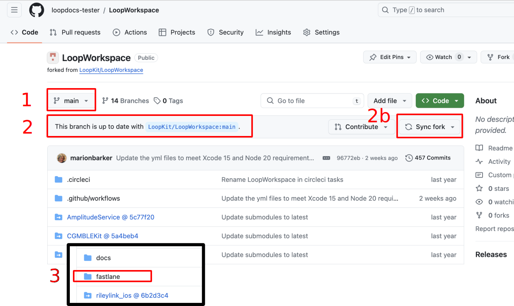
Prepare to Edit your Fastfile¶
- After clicking on the
fastlanefolder, 3 files are visible; click onFastfile - When the
Fastfilefile opens click on the pencil icon so you can edit the file
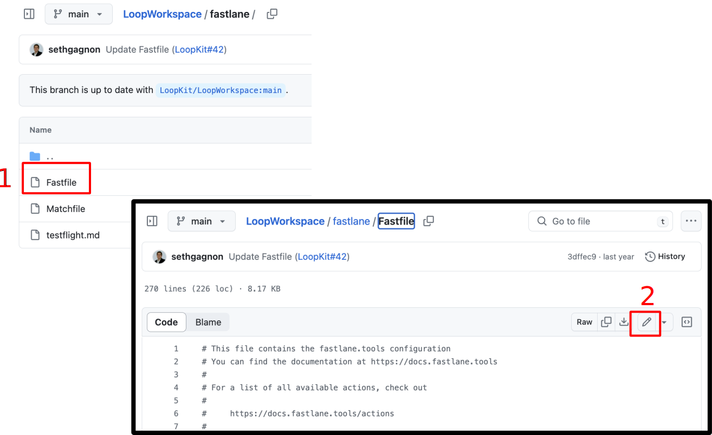
Edit your Fastfile¶
-
Type either Cmd+F (Mac) or Ctrl+F (PC) to reveal the find and replace dialog shown in the graphic below
- Copy the phrase indicated below and paste it into the find buffer, and then type into the replace buffer the build number you want to require (one more than indicated by your last error)
previous_build_number + 1 -
Tap on the
Findbutton and theReplacebutton to change the file - Click on the
Commit changesbutton at upper right
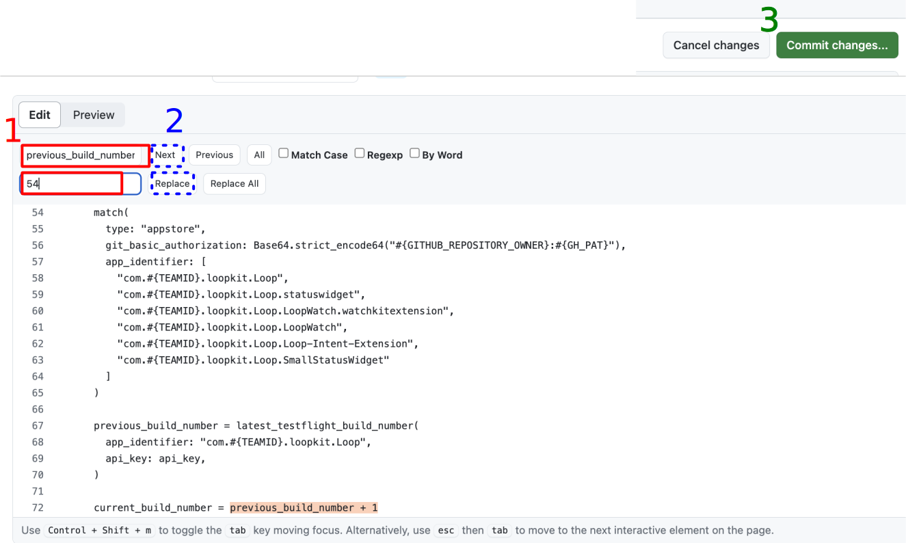
Save to a Patch Branch¶
Refer to the graphic below. The number 3 by the Commit changes button indicates the selection made in the previous step; it is shown for reference.
- Tap on indicator that you will save to a new branch - GitHub will automatically name it for you
- Tap on
Propose changesbutton and then STOP; do not click onOpen pull request- you are done with this step
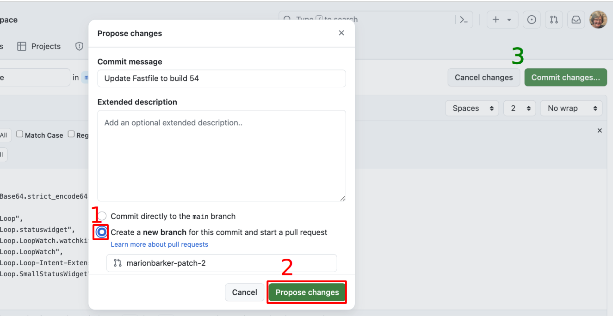
Build using Patch Branch¶
Select Action: Build Loop
Refer to the first graphic below:
- Tap on Run Workflow (on the right side)
- Tap on the dropdown arrow to the right of the default
branch - Choose the
branchyou just created- Start to type
patchin thebranchselection dropdown - Only
brancheswith that phrase will be displayed
- Start to type
- After you have the correct
branchselected, tap on run workflow
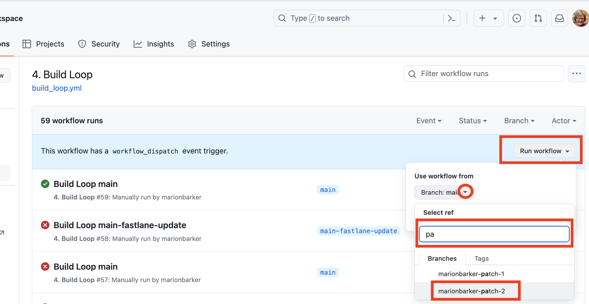
There is not a lot of indication that the build started - be patient - or refresh the screen - do NOT start another build. Your build status should be similar to the next graphic.
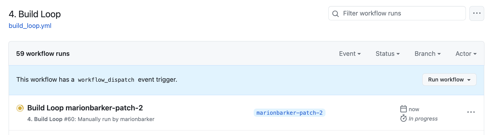
Once you get a successful build, you return to using your normal branch for future builds.
There is no reason to expect subsequent builds to fail with this same error, but if it does, repeat this section.
Could not install WWDR certificate¶
Assuming you have successfully built using the Browser-Build / GitHub method before:
- If the details show this message,
Could not install WWDR certificate, make sure your Apple developer account is in good standing and that there are no agreements that need to be accepted and that yourDistribution Certificatesdid not expire - Sometimes this is a sign that Apple did not respond to a request, this failure happens in the first few minutes
- Repeat the build and it should be fine the next time
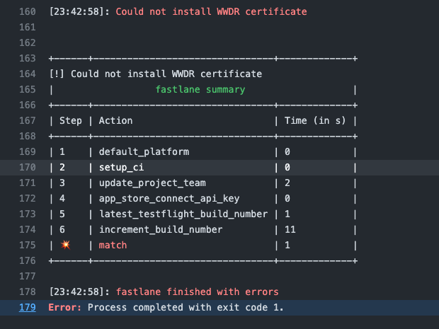
Handle the FastLane API Key Error¶
This was never an actual error - but a procedure that worked briefly. There is no need to revoke and generate a new FastLane API Key.
Browser Build Temporary Issue is Fixed with Loop 3.6.2
Apple made a modification in May 2025 that impacted Browser Build for builders who needed to renew their certificates or generate Identifiers. With the release of Loop 3.6.2, these issues are resolved.
It took several weeks for the change at Apple to propagate through all the API Keys. Thus an adhoc fix worked initially but then stopped working. An update to fastlane (the code that communicates between Apple and GitHub) is now in the released Loop code (3.6.1 and newer).
We have removed the section on getting a new Fastlane API Key - that is not the solution to what turned out to be a change made by Apple.
The rest of this section has some steps that may be needed in the future. Do not follow any of these steps at this time unless a mentor has suggested it or you have a specific error case where one of these steps is recommended.
If you are building xDrip4iOS, or another app that does not automatically renew certificates, go ahead and try these steps. No need to check with a mentor first.
Other Help Steps¶
These help steps might be needed so the documentation is here.
Revoke Distribution Certificate¶
Make sure you have the ENABLE_NUKE_CERTS variable added and set to true. See Add Variable for instructions.
This step is done at the Apple Developer site; click on this link.
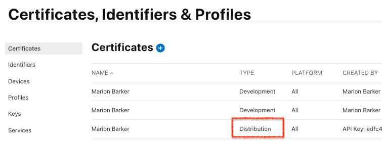
If you have two Certificates that have the Distribution type, most people should delete both.
- Carefully examine the Type column - do not delete a Development Certificate
- Click on a Distribution Certificate, select Revoke and confirm
- If you have two, revoke both (unless you are a developer who needs two)
- Other certificates (ignore these):
- Development Type certificates are associated with an Xcode build for your app; an app on a phone built with Xcode will stop working if you delete that
- Managed Distribution certificates are generated when you use another method to distribute an app, such as Diawi or uploading an Xcode build from a Mac to TestFlight
You will get an email informing you the certificate was revoked.
Run the Build action and a new Distribution Certificate will be created along with the profiles and build credentials needed.
- This is true for Loop, LoopCaregiver, LoopFollow and Trio if you have the ENABLE_NUKE_CERTS variable set to true
But my Build Action Failed Again
-
Make sure you deleted all the Distribution Certificates as directed above.
-
Make sure you have the
ENABLE_NUKE_CERTSvariable set to true- Make sure you configured
ENABLE_NUKE_CERTSas a variable - Make sure you spelled
ENABLE_NUKE_CERTScorrectly - Make sure you entered the value of
truein little letters
- Make sure you configured
-
Then follow the link to delete your Match Secrets repository; after that step, then run
Build Loopagain.
But what about TestFlight builds?
Previous builds using this method that are already in TestFlight are not affected by deleting the Distribution Certificate.
Do not continue to later sections on this page unless directed or for the following special case:
Building xDrip4iOS?
For xDrip4iOS, the nuke certs capabality is not available (as of 2025-June).
For that case, or if you choose not to add the ENABLE_NUKE_CERTS variable, please take these additional steps:
- Revoke Distribution Certificate (this section)
- Delete Invalid Profiles
- Delete Match-Secrets
- Run the action Create Certificates
- Run the action Build
Navigate with Menu¶
Once you open the Apple Developer site for Certificates: link, you can move around in the menu to get to Certificates, Identifiers, Keys and Profiles.
You can navigate between these items by clicking on the links.
- Certificates (previous section)
- Identifiers (you used those when adding the App Group)
- Keys
- Access to the Apple Push Notification Keys used by people to enable remote control using Nightscout, LoopCaregiver or LoopFollow
- The
FastLane API Keyis at the App Store Connect site - not at this site
- Profiles (next section)
Delete Invalid Profiles¶
You should not need to delete invalid profiles for Loop, LoopCaregiver, LoopFollow and Trio when you have the ENABLE_NUKE_CERTS variable set to true. If a mentor suggests you do this, follow these instructions.
This step is done at the Apple Developer site; click on this link.
Your profiles will be displayed. Under the Expiration column, you might see an expiration date, even if some of these are invalid because you just revoked a certificate, or you might see Invalid.
-
Click on the
Editbutton to open a new window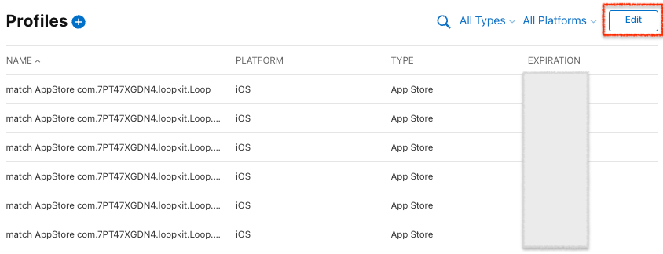
-
Select invalid profiles - if all are invalid, click all profiles at upper left
-
Click on the
Deletebutton to revoke selected profiles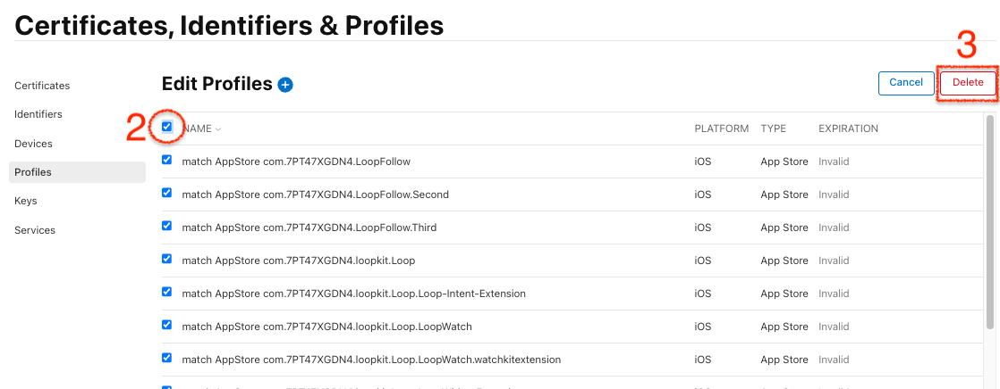
-
Review the profiles - note that in this view, the full name of each profile is visible - and then click on the
Deletebutton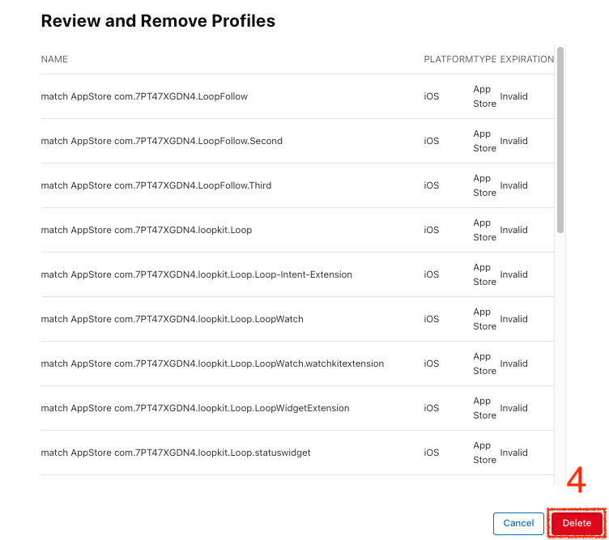
Delete Match-Secrets¶
Make sure you really need to do this - please ask a mentor for help.
Make sure you only delete Match-Secrets. Do NOT delete the repository of the app you are trying to build.
When building Loop, LoopCaregiver, LoopFollow or Trio:
- If you just revoked a Distrbution Certificate - try building first before you delete your
Match-Secrets - Make sure you have
ENABLE_NUKE_CERTSset to true - The next time you try to build, the information in Match-Secrets is used to remove invalid profiles
- A new Distribution Certificate and new profiles will be generated and your Match-Secrets will be updated
When building apps that do not use ENABLE_NUKE_CERTS, like xDrip4iOS, you may need to manually delete your profiles and your Match-Secrets repository before trying to run Create Certs followed by Build.
Open the GitHub website for your organization or personal account.
https://github.com/my-name-org/Match-Secrets
https://github.com/my-name/Match-Secrets
- Delete your
Match-SecretsRepository- Click on Settings
- Scroll to the bottom (into the Danger Zone)
- Choose
Delete this repository - Read and follow directions to delete
- The next action you run will automatically create a new Match-Secrets repository for you
Delete Identifiers¶
These instructions are useful if:
- You messed up your TEAMID when initially setting up your app and you want to remove identifiers that may be confusing
- You built an app but no longer want it, and want to clean up the list of identifiers so it is shorter
The Identifier that is associated with the Loop identifier cannot be deleted if it is already in the App Store but all others can. If you attempt to delete the XC Loop identifier, you may be told it cannot be deleted because it is in use in the app store. That's OK. If a Bundle ID has ever been associated with an app in the App Store, you cannot delete the Identifier.
- Open this link: Certificates, Identifiers & Profiles: Identifiers List on the Apple Developer site.
- Use the graphic below as a guide to removing identifiers
- Keep repeating the steps until you've removed all the identifiers you can (or want to) delete
- It is OK to delete an identifier even if it does have your correct
TEAMID- If you try to delete the
Loopidentifier with yourTEAMID, it will refuse, don't worry, just keep going
- If you try to delete the
- Note - this graphic indicates where on this page you can find your
TEAMID- If you notice an identifier with a value embedded in it that does not have your
TEAMID, then delete it if you can and UpdateSecretswith your correctTEAMID - If you try to delete a Loop identifier that does not have your
TEAMID, but you already added to the App Store, it will refuse, don't worry, just keep going - Delete all the other identifiers first that have the same incorrect
TEAMIDand then try to delete the Loop identifier with the incorrectTEAMID
- If you notice an identifier with a value embedded in it that does not have your
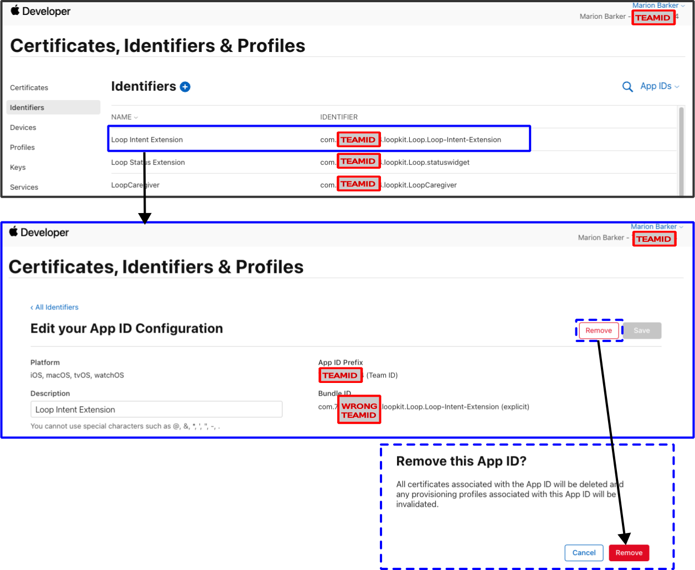
If coming here because you entered the wrong TEAMID in Secrets - return to Rerun Steps with Correct TEAMID when you've deleted as many identifiers as you can.
After you delete identifiers, you must add them back before you can build a given app. Configure them and build again.
New Developer ID with Same GitHub Account¶
You can use the same GitHub account with a new developer ID. This is an uncommon scenario, but if you lost access to the developer ID you used to use, you can modify your GitHub account to use a new one. Remember - this will be a new app, requiring you to enter your settings fresh and add your pump again. (New pod required if using Omnipod.)
Here are the steps:
- Update the 4
Secretsthat are associated with the Apple Account for each repository on the GitHub used for browser build:- TEAMID
- FASTLANE_ISSUER_ID
- FASTLANE_KEY_ID
- FASTLANE_KEY
- Once the
Secretsare updated, start at the Identifiers page and work through the process for each app